Italy has played a central role in the history of art, with its influence stretching from the Roman era to
the Renaissance and beyond. The country is home to some of the world’s most famous artists, architects, and
artistic movements, with cities such as Florence, Rome, and Venice becoming important centers of creativity
and innovation. During the Renaissance, Italian artists revolutionized painting, sculpture, and architecture
by emphasizing realism, perspective, and human expression. Figures such as Leonardo da Vinci and
Michelangelo helped shape the artistic traditions that continue to influence the world today. From ancient
Roman sculptures and Renaissance masterpieces to modern Italian design, art remains an essential part of
Italy’s cultural identity.
Leonardo da Vinci
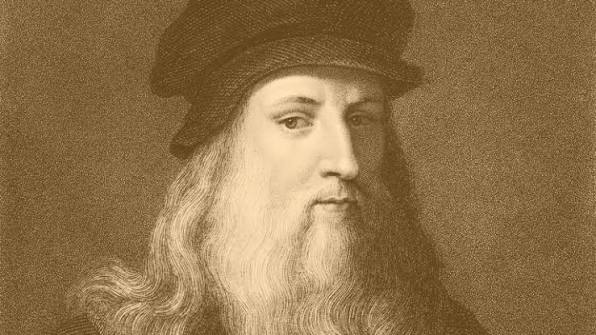
Leonardo da Vinci was one of the most influential figures of the Italian Renaissance, known for his
achievements as an artist, inventor, scientist, and engineer. Born in Vinci, Tuscany, he created
some of the most famous artworks in history, including the Mona Lisa and The Last Supper. Beyond
painting, Leonardo studied anatomy, nature, mechanics, and technology, demonstrating a deep
curiosity about the world around him. His combination of artistic creativity and scientific
exploration made him a symbol of the Renaissance ideal and continues to inspire people around the
world.
Michelangelo
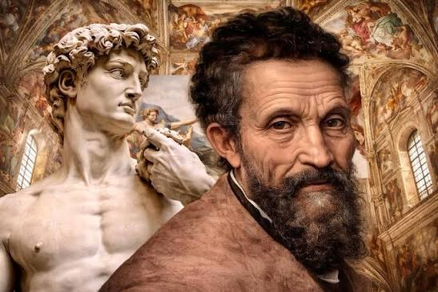
Michelangelo was one of the greatest artists of the Italian Renaissance, known for his achievements
in sculpture, painting, and architecture. Born in Caprese, Tuscany, he created some of the most
celebrated masterpieces in history, including the sculpture David and the ceiling of the Sistine
Chapel in Vatican City. His works are recognized for their incredible detail, emotional expression,
and understanding of the human form. Michelangelo’s artistic achievements helped define the
Renaissance and continue to influence artists around the world.
Literature
Italy has a rich literary tradition that has played an important role in shaping the Italian language and
influencing world literature. From medieval poetry and Renaissance writings to modern novels and poetry,
Italian authors have explored themes of history, society, philosophy, and human experience. Writers such as
Dante Alighieri and Alessandro Manzoni helped define Italian literature, with their works becoming important
parts of the country’s cultural heritage. Italian literature continues to inspire readers around the world
through its creativity, storytelling, and connection to Italy’s history and identity.
Dante Alighieri
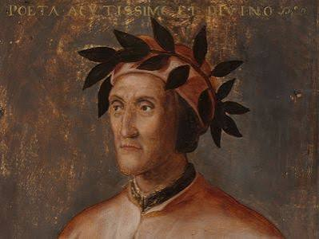
Dante Alighieri was one of the most important figures in Italian literature and is often considered
the father of the Italian language. Born in Florence, he is best known for writing The Divine
Comedy, an epic poem that explores the journey through Hell, Purgatory, and Paradise while
reflecting medieval beliefs, philosophy, and human experiences. Written in the Tuscan dialect rather
than Latin, Dante’s work helped establish the foundation of the modern Italian language. His
influence on literature, culture, and Italian identity continues to be recognized around the world.
Alessandro Manzoni
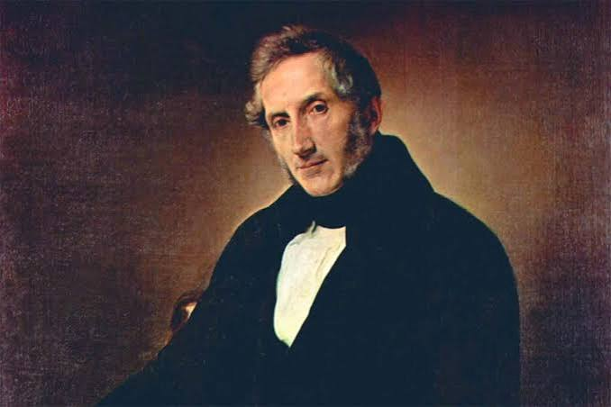
Alessandro Manzoni was one of Italy’s most influential writers and an important figure in the
development of modern Italian literature. Born in Milan, he is best known for writing The Betrothed
(I Promessi Sposi), a historical novel considered one of the greatest works of Italian
literature.
The novel explored themes of love, justice, faith, and social inequality while helping promote the
use of a unified Italian language. Manzoni’s writings played an important role in shaping Italian
culture during the period of Italian unification and continue to be studied today.
History
Italy has a long and influential history that has shaped the development of Western civilization. From the
Roman Empire and its contributions to law, engineering, and government, to the Renaissance and the movement
toward Italian unification, the country has been home to many important historical events and figures.
Throughout the centuries, Italian leaders, thinkers, and revolutionaries have played significant roles in
shaping politics, culture, and society. Figures such as Julius Caesar and Giuseppe Garibaldi represent
different eras of Italian history and highlight the country’s lasting impact on the world.
Julius Caesar
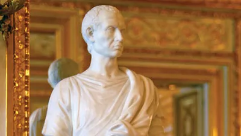
Julius Caesar was one of the most influential figures in Ancient Rome and played a major role in the
expansion and transformation of the Roman Republic. A skilled military leader, politician, and
writer, he conquered vast territories during the Gallic Wars and introduced important political and
social
reforms. His rise to power changed the course of Roman history and eventually contributed to the
transition from the Roman Republic to the Roman Empire. Caesar’s legacy continues to influence
modern politics, military strategy, and historical studies around the world.
Giuseppe Garibaldi
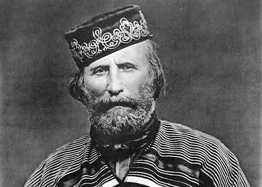
Giuseppe Garibaldi was one of the most important figures in the Italian unification movement
(Risorgimento). A military leader and revolutionary, he played a key role in bringing
together
several Italian states into a unified country during the 19th century. His famous expedition of the
Thousand (Spedizione dei Mille) helped unite southern Italy with the rest of the nation.
Known for
his leadership, courage, and commitment to Italian independence, Garibaldi remains a symbol of
national unity and one of Italy’s most celebrated historical figures.
Science
Italy has made significant contributions to science, technology, and innovation throughout history. Italian
scientists and inventors have helped shape our understanding of the natural world, astronomy, physics,
engineering, and communication. From the discoveries of the Renaissance period to modern technological
advancements, Italy has been home to many pioneering thinkers who challenged ideas and expanded human
knowledge. Figures such as Galileo Galilei and Guglielmo Marconi represent Italy’s long tradition of
scientific curiosity, experimentation, and innovation.
Galileo Galilei
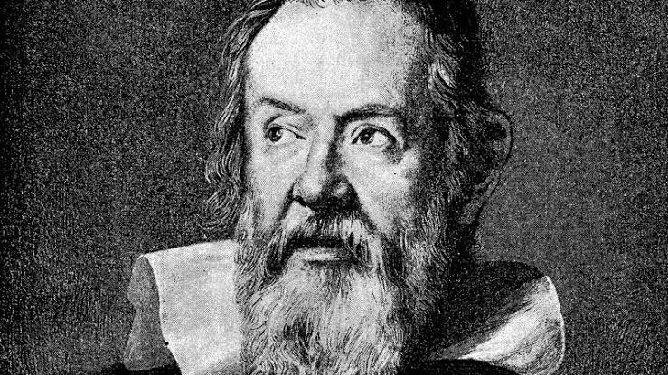
Galileo Galilei was one of the most influential scientists in history and is often considered the
father of modern physics and observational astronomy. Born in Pisa, Italy, he improved the telescope
and used it to make important discoveries about the Moon, planets, and stars, including evidence
that supported the idea that Earth revolves around the Sun. His studies of motion, mathematics, and
experimentation helped establish new approaches to scientific investigation. Galileo’s discoveries
challenged traditional beliefs and laid the foundation for modern science.
Guglielmo Marconi
Guglielmo Marconi was an Italian inventor and electrical engineer best known for his pioneering work
in wireless communication. Born in Bologna, he developed practical systems for transmitting radio
signals over long distances, helping advance the development of modern radio technology. His
experiments played an important role in the evolution of telecommunications, and he was awarded the
Nobel Prize in Physics in 1909 for his contributions. Marconi’s innovations transformed global
communication and continue to influence technologies used today.
Film
Italian cinema has had a major influence on the history of filmmaking, known for its creativity,
storytelling, and ability to explore social, cultural, and human experiences. Italy became a center of
innovation in cinema, particularly through movements such as Italian Neorealism, which
focused on realistic
portrayals of everyday life and the challenges faced by ordinary people after World War II. Italian
filmmakers, actors, and directors have gained international recognition for their artistic vision, with
figures such as Federico Fellini and Sophia Loren becoming symbols of Italy’s lasting contribution to world
cinema. From classic films to modern productions, Italian cinema continues to reflect the country’s culture,
history, and creativity.
Federico Fellini
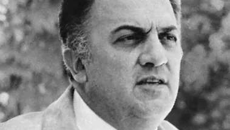
Federico Fellini was one of Italy’s most influential film directors and a major figure in world
cinema. Born in Rimini, he became known for his distinctive storytelling style, imaginative visuals,
and exploration of themes such as memory, dreams, identity, and human experiences. His most famous
films include La Dolce Vita and 8½, which are considered masterpieces of Italian cinema. Fellini’s
creative approach helped establish Italy as a major force in international filmmaking, and his
influence continues to inspire directors around the world.
Sophia Loren
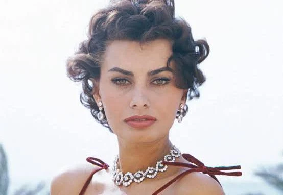
Sophia Loren is one of Italy’s most celebrated actresses and one of the most recognizable figures in
international cinema. Born in Rome, she became famous for her performances in Italian and Hollywood
films, earning worldwide recognition for her talent, charisma, and versatility. She won the Academy
Award for Best Actress for her role in Two Women (1960), becoming the first actress to win an Oscar
for a performance in a non-English-language film. Loren remains an icon of Italian cinema and
continues to represent Italy’s cultural influence in film.
Fashion
Italy has long been recognized as one of the world’s leading centers for fashion and design, known for its
creativity, craftsmanship, and attention to detail. Cities such as Milan have become global fashion
capitals, hosting major events and attracting some of the most influential designers and fashion houses in
the world. Italian fashion combines traditional craftsmanship with modern innovation, influencing clothing,
luxury goods, architecture, and lifestyle design. Designers such as Giorgio Armani and Gianni Versace have
helped establish Italy’s reputation for elegance, creativity, and excellence in the international fashion
industry.
Giorgio Armani
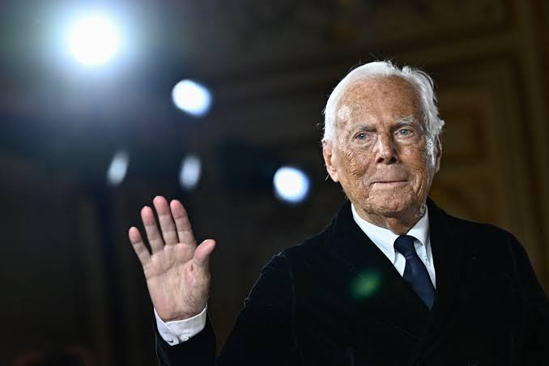
Giorgio Armani is one of Italy’s most influential fashion designers and the founder of the Armani
fashion house. Born in Piacenza, he became known for his elegant, minimalist designs and his
innovative approach to modern menswear and luxury fashion. His work helped redefine professional and
formal clothing by introducing softer, more comfortable styles while maintaining sophistication.
Through Armani, Italy’s reputation as a global leader in fashion and design has continued to grow.
Gianni Versace
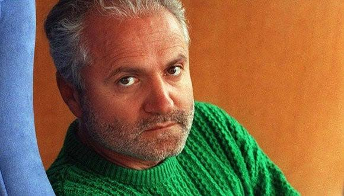
Gianni Versace was a renowned Italian fashion designer and the founder of the Versace fashion house.
Born in Reggio Calabria, he became famous for his bold designs, vibrant patterns, and use of luxury
materials that challenged traditional fashion styles. Versace helped transform fashion into a form
of artistic expression and built one of the world’s most recognizable luxury brands. His creativity
and influence continue to shape the fashion industry today.